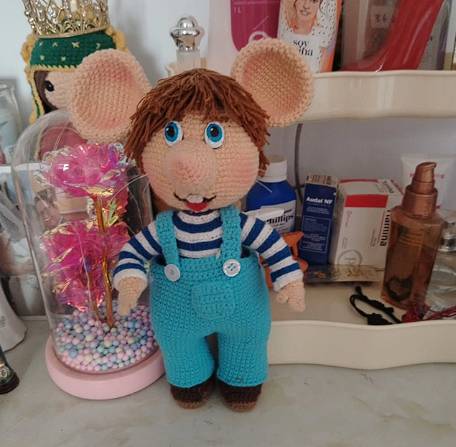
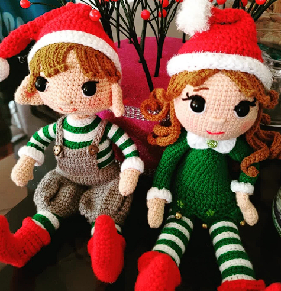
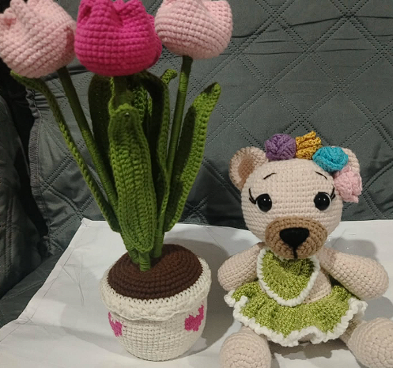
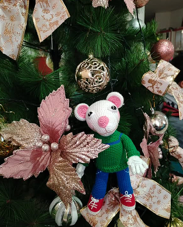
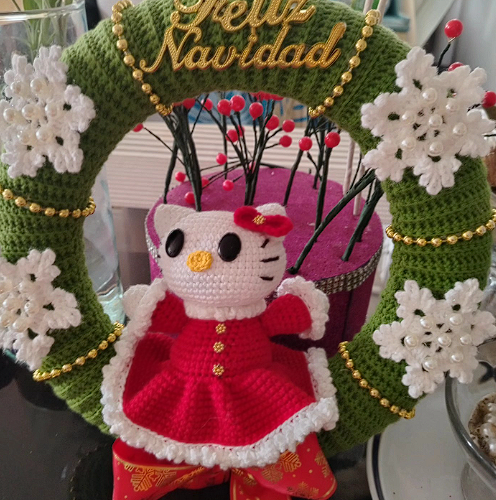
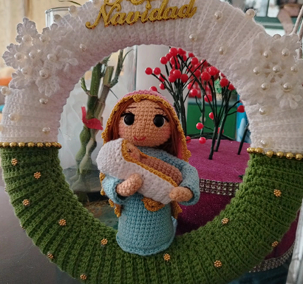
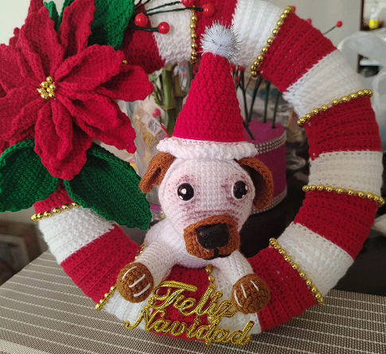

Hecho a mano

Muñeco tejido a crochet
Un compañero lleno de personalidad.
Amigurumis, flores y detalles únicos que convierten cualquier día en una ocasión especial.

Cada pieza tiene su propio encanto. Encuentra tu favorita.
✳ Precios de ejemplo en soles peruanos (S/). Se pueden ajustar antes de publicar la tienda.

Un compañero lleno de personalidad.

Una osita tierna para regalar.
Flores que duran para siempre.

Un personaje que alegra cualquier rincón.

Un toque tierno para la decoración.

Una pieza artesanal llena de significado.

Un pequeño amigo para decorar.
Dos ayudantes para una Navidad mágica.
En Maguitejidos creemos que los detalles pequeños pueden crear recuerdos enormes. Cada amigurumi y cada flor se teje con dedicación para convertirse en un regalo especial, hecho para durar.
Gracias por apoyar lo hecho a mano y por llevar un pedacito de nuestro cariño a tu hogar.
Hablemos de tu ideaEscríbenos para consultar disponibilidad, personalizar un detalle o coordinar tu pedido.
El contacto de WhatsApp se activará cuando se configure el número de la tienda.
Estamos para ayudarte